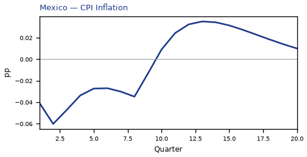
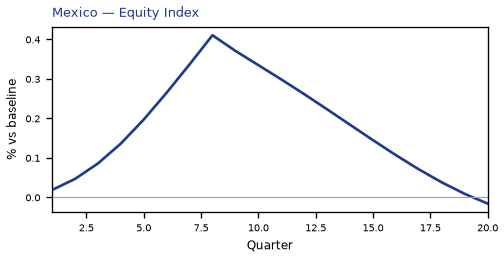
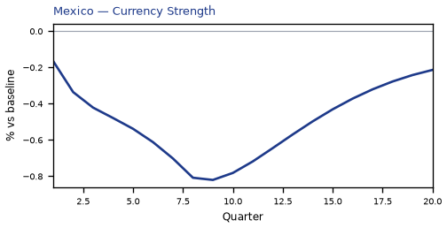
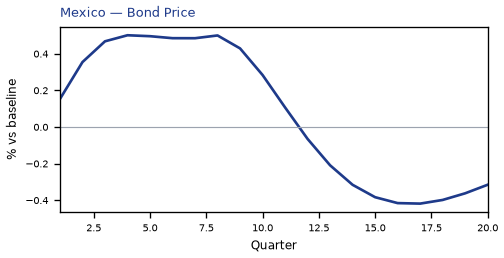
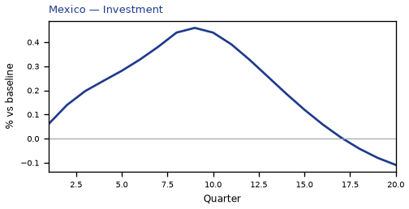
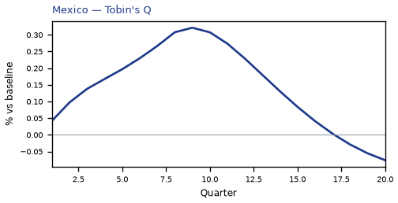
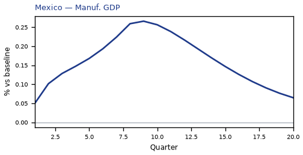
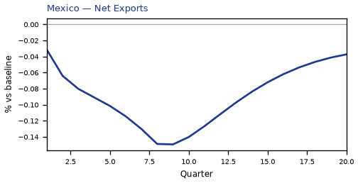
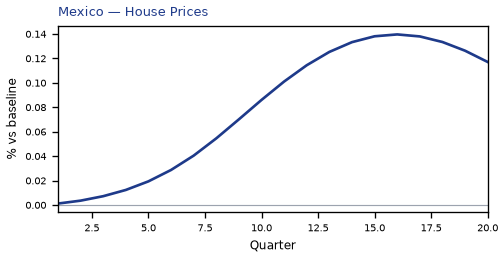
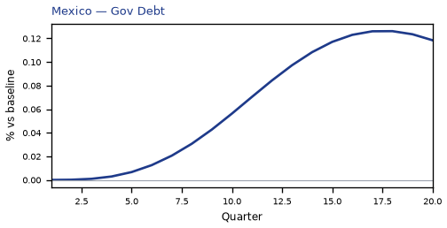

MX — Mexico
**Mexico: a modest positive spillover from a 200bp US rate cut**
The main impact of a 200 basis-point (2.00 percentage-point) cut in United States interest rates on Mexico is a 0.12% rise in GDP by the 12th quarter — a modest, slow-building positive spillover rather than a large hit. This is the second-largest absolute GDP response in the panel, but the magnitude stays small: the model never produces a dramatic Mexican boom from easier US money. The shock is a US monetary easing; Mexico's own policy rate moves only as an endogenous response, and the country's high trade and financial integration with the US is what carries the impulse across the border.
**Demand and trade.** Household consumption rises gradually, peaking at 0.06% above baseline in Q12 and still 0.01% higher by Q20 — a persistent but small demand gain. Private investment is the strongest domestic component, peaking at 0.46% above baseline in Q9 before fading and turning slightly negative (−0.11%) by Q20 as the initial cost-of-capital relief is exhausted. Net exports — this model's trade balance, with no separate import/export split — deteriorate throughout, reaching −0.15% of GDP around Q9 and remaining −0.04% below baseline at Q20. The mechanism is the exchange rate, not a decomposition of trade flows: easier US money weakens the dollar, and the peso strengthens in real terms, eroding Mexico's competitiveness and pulling the trade balance down even as domestic demand improves. Government spending drifts marginally lower, peaking at just −0.02% below baseline in Q12, while government debt rises steadily to 0.13% above baseline by Q18 — a small, slow fiscal drift rather than an active stimulus.
**External / FX.** The real exchange rate falls to −0.82% by Q9 — that is a real appreciation of the peso, since a decrease in this series means the home currency has strengthened in real terms. The peso's real appreciation is the mirror image of the US easing, and it is the single clearest transmission channel here: the stronger peso makes Mexican goods relatively more expensive, which is exactly why net exports fall even as consumption and investment rise. The RER never returns to baseline within the horizon, ending at −0.21% in Q20, so the competitiveness drag persists.
**Labour.** Employment rises steadily, peaking at 0.09% above baseline around Q15–Q16 and still 0.07% higher at Q20 — a slow labour-market improvement that lags the output response. Unemployment falls correspondingly, reaching −0.016 percentage points below baseline at Q14 and remaining −0.007pp lower at Q20. Real wages move the other way at first: they fall to −0.11% below baseline by Q11 as the initial inflation dip and the peso appreciation squeeze real incomes, then recover and turn positive (+0.06%) by Q20. The wage path is a squeeze-then-recovery, not a straightforward gain.
**Prices.** CPI inflation falls to −0.06pp below baseline in Q2, stays negative through Q9, then turns positive from Q10 and ends 0.01pp above baseline at Q20. Summed over Q1–Q12, the cumulative CPI effect is −0.25 percentage points — a modest net disinflation over the first three years, not a large price-level shift. Domestic inflation follows a similar arc, peaking at −0.04pp in Q2 and turning positive by Q10. Firms' marginal cost rises to 0.07% above baseline by Q12, consistent with the demand recovery feeding into costs later in the horizon.
**Financial conditions.** Mexico's local policy rate falls to −0.12pp below baseline in Q4, tracking the US easing, then turns positive from Q12 and ends 0.08pp above baseline as the domestic recovery firms. The 2-year government yield falls to −0.11pp in Q2 before turning positive from Q9; the 5-year and 10-year yields rise modestly, peaking at 0.04pp and 0.02pp respectively in Q12. Bond prices rise to 0.50% above baseline in Q4 — the mirror of the initial yield decline — then fall to −0.32% below baseline by Q20 as yields normalize higher. Equity prices rise to 0.41% above baseline in Q8, then fade and turn slightly negative (−0.02%) by Q20. Tobin's Q — the value of installed capital — peaks at 0.32% above baseline in Q9 and turns negative by Q18. House prices rise steadily to 0.14% above baseline by Q16 and remain 0.12% higher at Q20. Bank credit supply barely moves, peaking at just 0.001% above baseline in Q16, and the lending spread is unchanged at zero throughout — financial frictions simply do not bind in this simulation.
**Sectoral and capital.** Manufacturing GDP is the most responsive sector, peaking at 0.27% above baseline in Q9 and still 0.06% higher at Q20 — the tradable sector benefits most from the easier external conditions. Services GDP rises more modestly, peaking at 0.08% above baseline in Q12. The capital stock accumulates slowly, reaching 0.02% above baseline by Q17 and staying there through Q20 — a small but durable investment response.
**Timing.** The GDP gain builds gradually, peaking at 0.12% above baseline in Q12, and has largely faded by Q19, ending at just 0.01% above baseline in Q20. The equity and investment responses peak earlier (Q8–Q9) and fade faster, while employment and house prices peak later (Q15–Q16). The CPI effect is negative early and turns positive from Q10.
**Close.** These are model impulse responses relative to a no-shock baseline, not forecasts. They describe how Mexico's economy would deviate from its own baseline path under a 200bp US rate cut, holding everything else at the model's assumptions. The headline is a modest, slow-building positive spillover, with the peso's real appreciation and the resulting net-export drag as the main offsetting force. Number check vs JSON: GDP peak +0.12%, CPI 3y -0.25pp, equity peak +0.41%.












source=live · global_macro_v5 · contract v6 · Q1–Q20 JSON · not financial advice